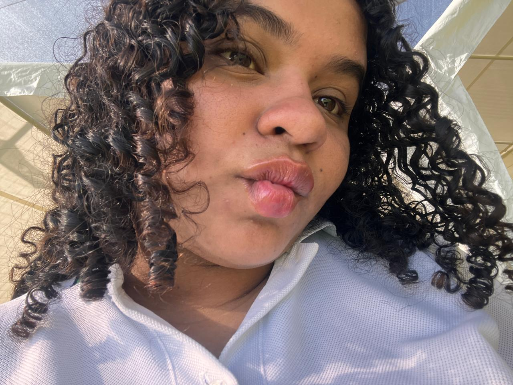

Risa
Reírme es mi manera de recordarle al mundo que todo tiene solución.
una forma de ser única
Original, amorosa y de las que siempre encuentran el lado bueno de las cosas. Si la vida se complica, respiro, me río y sigo adelante.

Soy una persona original, con una forma de ser que no se parece a la de nadie. Me gusta reír, y mucho: creo que una buena carcajada arregla más días de los que uno imagina.
Tengo la costumbre de buscarle el lado bueno a todo, incluso cuando cuesta encontrarlo. Quiero a la gente con el corazón entero, y eso se nota en cómo abrazo, cómo escucho y cómo celebro lo que a los demás les sale bien.
Reírme es mi manera de recordarle al mundo que todo tiene solución.
Soy muy amorosa y doy cariño sin medida, a mi familia, a mis amigos y a la vida.
Aunque el camino se ponga difícil, siempre encuentro la manera de seguir adelante.
Quiero viajar mucho y conocer el mundo con mis propios ojos. Me encantaría estudiar algo relacionado con eso, tal vez ser azafata.